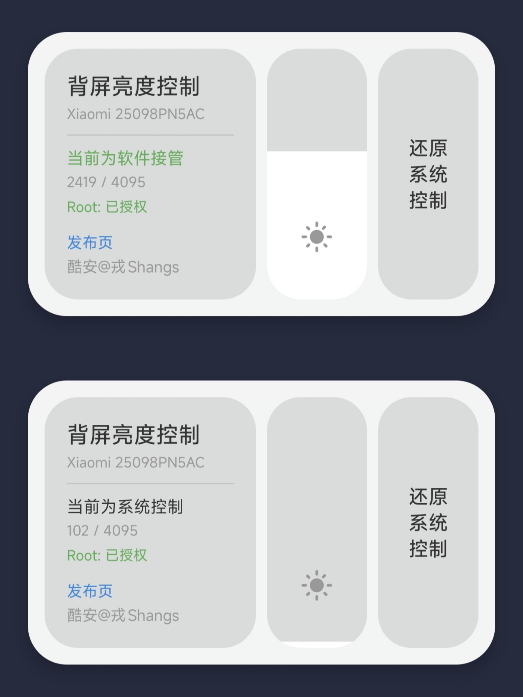

小米17 Pro / 17 Pro Max 背屏亮度控制工具
" 滑块一拖，亮度随心。 "
戎Shang · 开发者博客 更多工具与开发日志 →实时显示当前亮度状态，一键切换

软件接管 vs 系统控制 两种状态一目了然
小米17 Pro / 17 Pro Max 的背屏很有用——
但系统的自动亮度，总是差点意思。
背屏激发是一个极简工具：
打开它，拖动滑块，背屏亮度随心调节。
一键锁定或恢复系统控制。
v1.2 全新界面，垂直亮度滑块直观调节。
控制中心磁贴，下拉通知栏即可切换。
已在 HyperOS 3.0.313.0 上测试通过。
没广告。没权限请求。没后台服务。
Root 权限，开屏即用，用完即走。
直观的滑块控件，拖动即可实时调节背屏亮度。所见即所得，调节更直观。
软件接管/系统控制，点击按钮即可切换。毫秒级响应，无需重启。
当前亮度值、Root状态、设备型号一目了然。状态智能识别，避免误操作。
下拉通知栏，点击磁贴即可快速切换背屏亮度。无需打开 App，在任何界面都能操作。
启动时自动验证 Root 权限。如果设备未 Root，立即提示并退出——不会留下任何残留。
直接读写 /sys/class/backlight/panel1-backlight/brightness，将亮度值写入内核接口。
软件接管：滑块调节亮度 → 写入 brightness 文件。
锁定：chmod 444 只读，系统无法修改。
恢复：chmod 644 恢复可写，系统重新接管。
📋 使用前提
小米17 Pro / 17 Pro Max · HyperOS 3.0.313.0 已测试
Root 权限（Magisk / KernelSU）
其他机型请确认背光路径为 /sys/class/backlight/panel1-backlight/
点击上方「下载 APK」，允许安装未知来源应用后完成安装。
首次打开时，Magisk / KernelSU 会弹出 Root 授权请求，选择「允许」。
拖动垂直滑块实时调节背屏亮度，找到合适的亮度值。
点击「还原系统控制」恢复系统自动调节，或保持软件接管状态锁定当前亮度。
/sys/class/backlight/ 需要 Root 权限才能修改文件权限和写入亮度值。没有 Root 无法绕过 Android 的权限隔离。panel1-backlight，理论上也能用，但未经过测试。当前版本 v1.2 · 小米17 Pro / 17 Pro Max · HyperOS 3.0.313.0 已测试 · 需要 Root
⚡ 下载 APK安装前请确认设备已获取 Root 权限（Magisk / KernelSU）
v1.2 新增垂直亮度滑块、全新卡片式界面
本项目完全开源，欢迎查阅、修改、提交 PR。
GitHub 项目MIT 协议 · 关注获取更多开源项目